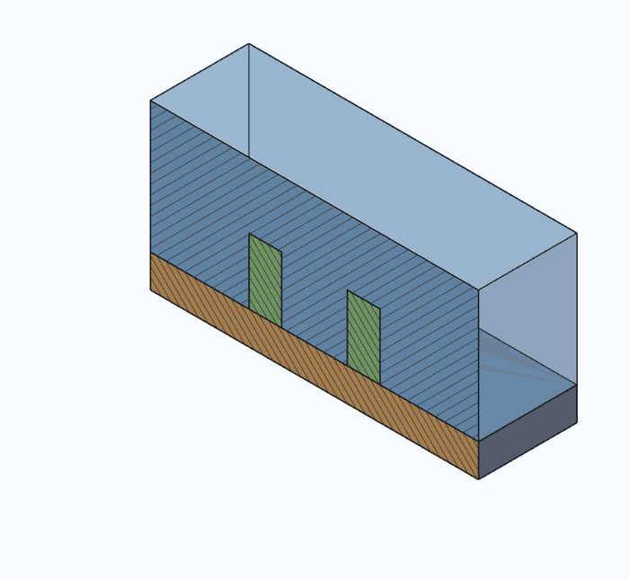
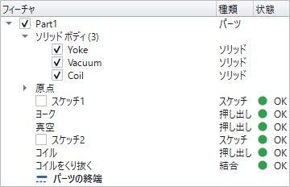
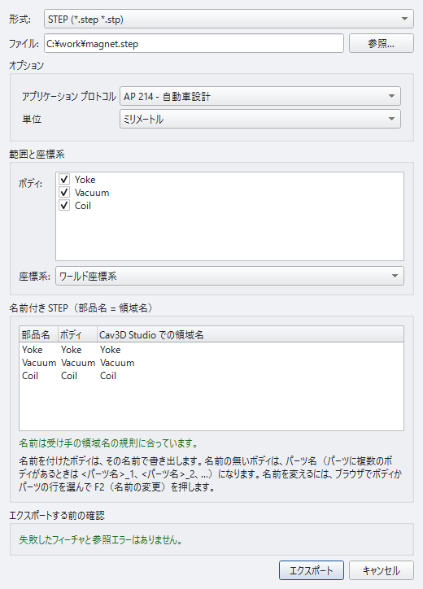
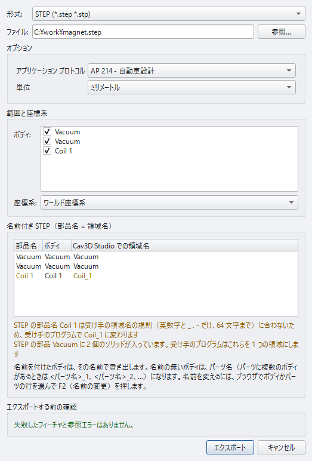
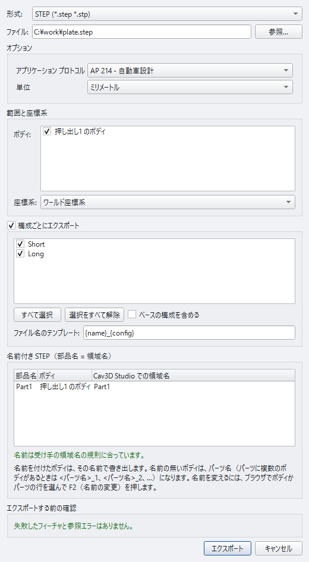
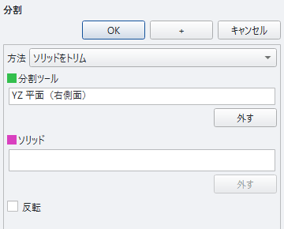
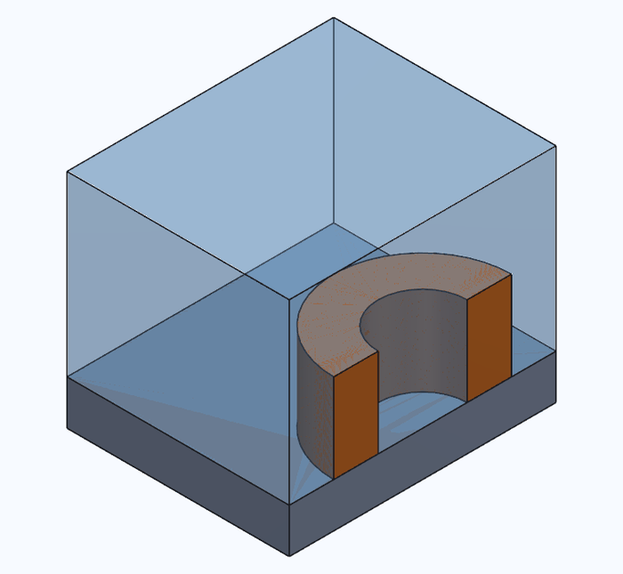

第 26 章
他の解析プログラムに形を渡す
この章では、EMRM-Studio の外の解析プログラム（Cav3D Studio など）に形を渡すための使い方を説明します。真空・コイル・ヨークなどの領域を別のボディで作り、ボディの名前を領域名にして、名前付き STEP で書き出します。寸法違いを一度に出す方法と、対称モデルを作る方法も説明します。EMRM-Studio の中で解くときは、STEP を書き出す必要はありません（第 II 部）。
26.1 外のプログラムに渡すときにできること
CAD は、解析の前の形づくりを受け持ちます。外のプログラムに渡すためにできるのは次のことです。
領域ごとに別のボディを作り、名前を付ける。
ボディの名前を領域名とした名前付き STEPを書き出す。受け取る側のプログラム（Cav3D Studio）は、ボディの名前を領域名の初期値として読みます。
寸法違いの形を、構成とコマンドラインで一括して書き出す。
対称面でボディを切って、1/2・1/4 のモデルを作る。
| 手順 | 操作 | 節 |
|---|---|---|
| 1 | 真空・コイル・ヨークを、重ならない別のボディで作る | 領域をボディで作る |
| 2 | ボディに領域名を付ける | ボディ名が領域名になる |
| 3 | 名前付き STEP をエクスポートする | 名前付き STEP を書き出す |
| 4 | Cav3D Studio で開く | Cav3D Studio に渡す |
| 任意 | 寸法違いを一括で出す／対称モデルにする | 構成で一括して出す・対称モデル |
26.2 領域をボディで作る
解析では、材料の違う部分を領域に分けます。mcad では、1 つの領域を 1 つのボディにします。真空（空気）の領域も、形のあるボディとして作ります。例として、ヨーク（板）の上に、コイル（輪）を含む真空の箱を作ります。


ヨークを作ります。XY 平面に、原点が中心の 100 × 60 の長方形を描き、リボンの［3D モデル］タブ → ［作成］パネル → ［押し出し］をクリックします。［方向］を［反転方向］にして、［距離 A］に
10 mmと入力します。最初の押し出しなので、［ブール演算］は［新規ソリッド］です。真空の箱を作ります。もう一度［押し出し］を始め、同じ長方形を選びます。［方向］は［既定］、［距離 A］は
40 mmにします。［ブール演算］は［新規ソリッド］にします。コイルを作ります。XY 平面に、原点が中心の円（半径 10 と 20）を描き、［距離 A］
20 mmで押し出します（［新規ソリッド］）。このとき、コイルは真空の箱と重なっています。重なりを取り除きます。リボンの［3D モデル］タブ → ［修正］パネル → ［結合］をクリックし、［ベース ボディ］に真空のボディ、［ツール ボディ］にコイルのボディを選びます。［演算］を［カット］にして、［ツール ボディを保持］にチェックを入れ、［OK］で確定します。真空のボディからコイルの形がくり抜かれ、コイルのボディは残ります。
26.3 ボディ名が領域名になる
名前付き STEP では、ボディの名前が STEP の部品名（ラベル）になり、受け取る側で領域名になります。
ブラウザの［ソリッド ボディ］を開き、ボディの行をクリックします。
F2（名前の変更）を押し、領域名（
Vacuum・Coil・Yoke）を入力して Enter を押します。右クリックの［ボディの名前を変更］でも同じです。


ボディの名前は、［プロパティ］パネルの［属性］タブの［名前］でも変えられます。名前を空にすると、既定の名前に戻ります。
ラベルの規則
| ボディの状態 | ラベル |
|---|---|
| 名前を付けたボディ | 付けた名前そのまま（［Vacuum］） |
| 名前のないボディが 1 つだけのパーツ | パーツの名前（［Part1］。ブラウザでパーツの行を選んで F2 で変えられます） |
| 名前のないボディが複数あるパーツ | パーツ名_番号（［Part1_1］・［Part1_2］…）。番号はボディの作成順で、名前を付けたボディも数えます |
番号は、名前を付けたボディにも振られるので、名前のないボディだけが飛び飛びの番号になります（［Vacuum］・［Part1_2］・［Part1_3］ のように）。名前のないボディの番号は、一度エクスポートすると、ドキュメントに覚えられます。以後は、ボディを抑制・削除しても、残りのボディの番号は変わりません。エクスポートの前は、ボディが増減すると番号が振り直されます。領域名にしたいボディには、すべて名前を付けます。
受け取る側（Cav3D Studio）は、領域名を英数字と _・.・- だけ、64 文字までにそろえます。日本語・空白・/ などを含む名前は、受け取る側で別の名前に変わります。エクスポートのダイアログが警告するので、英数字の名前にします。
26.4 名前付き STEP を書き出す
リボンの［管理］タブ → ［挿入］パネル → ［エクスポート］をクリックします。［形式］が［STEP］のまま、［ファイル］に保存先を入力します。
［アプリケーション プロトコル］は既定の［AP 214 - 自動車設計］、［単位］は［ミリメートル］のままにします。
［範囲と座標系］の［ボディ］で、書き出す領域にチェックを付けます。［名前付き STEP（部品名 = 領域名）］の表に、部品名・ボディ・受け取る側での領域名が並びます。

図 26-3 領域名の確認。部品名とボディ名が同じで、受け取る側でも同じ名前になります。 表の下に警告がないことを確かめて、［エクスポート］を押します。

警告は、表の下に色付きの文で出ます。次の図は、受け取る側で名前が変わる場合（［Coil 1］ は空白があるので ［Coil_1］ になります）と、同じ名前の 2 つのボディが 1 つの領域になってしまう場合（［Vacuum］）です。


名前が重なっているときは、ボディの名前を変えます。同じ名前の複数のボディは、受け取る側で 1 つの領域になり、材料の違う部分が混ざります。
書き出されるのは、チェックを付けたボディだけです。ヨークを除くなどの範囲指定は、チェックの付け外しで行います。ボディの色も STEP に書かれます。
座標は、［座標系］の選び方で変わります。受け取る側の軸に合わせたいときは、UCS を作って選びます（第 5 章）。
26.5 Cav3D Studio に渡す
書き出した STEP は、Cav3D Studio で開きます。受け取る側の操作は、Cav3D Studio の説明を見てください。mcad 側で確かめることは次のとおりです。
STEP を書き出す前に、名前付き STEP の表に警告がないことを確かめます。
Cav3D Studio で STEP を開くと、ボディの名前が領域名の初期値になります。名前を見て、領域ごとに材料と境界条件を設定します。
形を変えたいときは、mcad でパラメータを変え、同じ名前で書き出し直します。ボディの名前を変えなければ、領域の対応は同じです。
26.6 構成で寸法違いを一括して出す
寸法だけが違う形（幅 80 と幅 160 など）を何通りも解析にかけるときは、構成（寸法やパターンの個数、抑制を変えたメンバー）を作って、一度に書き出します。構成の作り方は第 11 章にあります。
ダイアログで書き出す
リボンの［管理］タブ → ［挿入］パネル → ［エクスポート］を開きます。構成のあるパーツでは、［構成ごとにエクスポート］の欄が出ます。
［構成ごとにエクスポート］にチェックを入れ、書き出す構成を選びます。基本の形も書くときは［ベースの構成を含める］にチェックを入れます。
［ファイル名のテンプレート］を決めます。既定の
{name}_{config}は、［ファイル］の名前と構成の名前をつなぎます（plate_Short.step・plate_Long.step）。
図 26-5 構成ごとのエクスポート。構成を選ぶと、1 構成につき 1 ファイルが書かれます。 ［エクスポート］を押します。構成ごとのファイルと、書いた内容の記録（
export_manifest.json）が、同じフォルダに書かれます。

コマンドラインで書き出す
mcad を起動せずに、python -m mcad convert で、ドキュメントを変えずに書き出せます。パラメータを一時的に変える --set、構成を選ぶ --config・--all-configs があります（コマンドラインの全体は第 28 章）。
python -m mcad convert plate.mcad out\plate.step --set W=150mm
python -m mcad convert plate.mcad out\plate.step --config Long
python -m mcad convert plate.mcad out\plate.step --all-configs--set 名前=値は、パラメータの式をこの書き出しのあいだだけ上書きします（繰り返せます）。構成が同じパラメータを決めていても、--setの値が勝ちます。ドキュメントのファイルは変わりません。構成が 2 つ以上のとき、ファイル名は
出力名_構成名.stepになります。--name-templateで変えられます。1 つだけなら、出力名のままです。2 つ以上のファイルを書くときは、
export_manifest.jsonも書きます。書いた各ファイルの構成・上書きしたパラメータ・体積・チェックサムが入ります。--no-manifestで書きません。出力先のフォルダは、先に作っておきます。
plate_configs.mcad -> out\plate_Short.step (step) [Short]
part Part1: body f26#0, 1 solid(s), volume 60984.1 mm^3
plate_configs.mcad -> out\plate_Long.step (step) [Long]
part Part1: body f26#0, 1 solid(s), volume 122471 mm^3
manifest: out\export_manifest.json
result: OK26.7 対称モデルを作る
形が対称なら、対称面で半分（や 1/4）に切ったモデルを解析すると、計算が軽くなります。mcad では、普通のリボンの［3D モデル］タブ → ［修正］パネル → ［分割］で、対称面の片側を切り捨てます。
対称面を決めます。原点の YZ・XZ・XY 平面のどれかなら、そのまま使えます。別の位置なら、作業平面を作ります（第 5 章）。
リボンの［3D モデル］タブ → ［修正］パネル → ［分割］をクリックします。［方法］を［ソリッドをトリム］にします。
［分割ツール］の欄で、ブラウザの［原点］の平面（ここでは［YZ 平面（右側面）］）をクリックします。［ソリッド］は空のままにします。すべてのボディが対象です。対称面をまたぐボディだけを選んでもかまいません。

図 26-6 分割のフォーム。［ソリッドをトリム］は、平面の片側を捨てます。 ビューのプレビューで残る側を確かめます。反対側が残るときは、［反転］にチェックを入れます。［OK］で確定します。

図 26-7 YZ 平面で半分にしたモデル。ヨーク・真空・コイルが同じ面で切られ、ボディの名前は変わりません。


［反転］を付けないときに残る側は、平面によって決まっています。
| 分割ツール | 残る側 |
|---|---|
| ［YZ 平面（右側面）］ | X が小さい側（X ≤ 0） |
| ［XZ 平面（正面）］ | Y が大きい側（Y ≥ 0） |
| ［XY 平面（上面）］ | Z が小さい側（Z ≤ 0） |
1/4 モデルは、もう 1 つ［分割］を足して、別の対称面で切ります。切ったボディは、名前をそのまま持つので、名前付き STEP でも同じ領域名で書き出されます。
26.8 今後のこと
次のことは、今の mcad にはありません。
境界条件・励振・電磁気の物性の設定と、解析の条件を含むパッケージの書き出し。
メッシュの作成と、ソルバの実行。
結果（固有モード・Q 値・電磁界の分布など）の読み込みと表示。
切った面への対称の条件の設定。
今の mcad で解析に備えるには、領域をボディに分けて、名前を付け、名前付き STEP で書き出します。